Preuves sans paroles
Une figure permet parfois de visualiser un énoncé mathématique...
Sommes

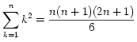
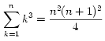
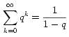
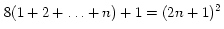
Relations métriques
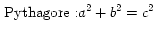
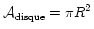
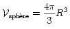
Identités
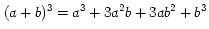
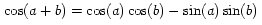
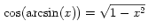
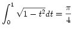
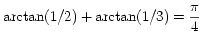
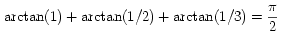
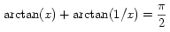
Inégalités
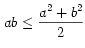
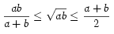
Divers
Extraction d'une racine carrée à la main
Résolution des équations du troisième degré
La fonction de Bolzano (continue, dérivable nulle part)
Programmes officiels
MathPrépa • Mathématiques Sup & Spé (MPSI / MP) | Documents pédagogiques par David Delaunay | En ligne : mohammed-el-baraka.github.io/math-prepa